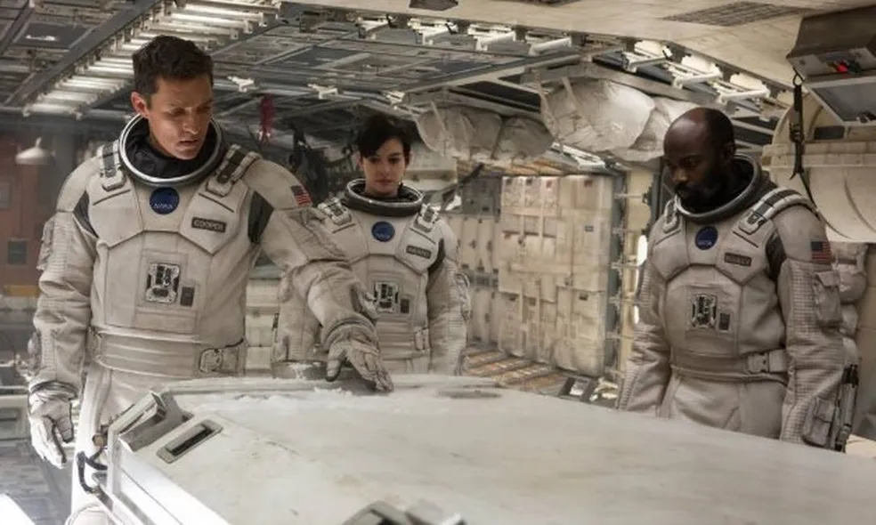
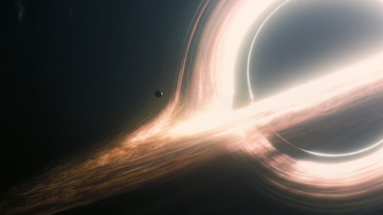
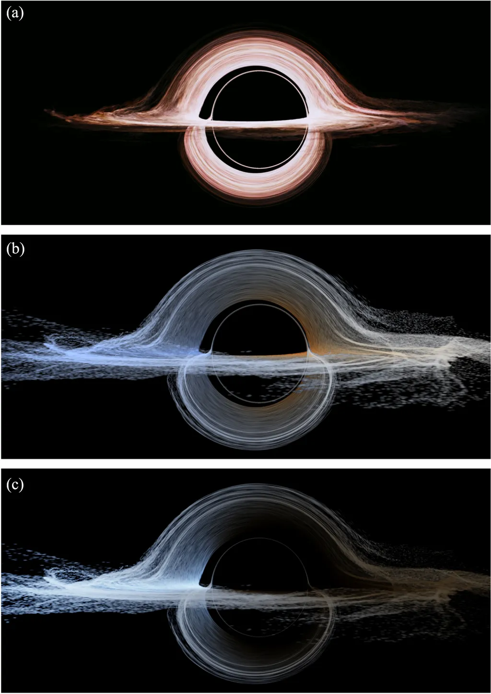

INTERESTELAR
Interestelar se passa em um futuro em que a Terra se torna um lugar inabitável. Com a promessa de encontrar um jeito de solucionar o problema, um grupo de exploradores descobrem um buraco negro capaz de proporcionar viagens pelo espaço e pelo tempo, além de outras dimensões, com a qual os humanos nunca tinham sonhado. Junto desses exploradores está Cooper (Matthew McConaughey), um ex-piloto que precisa deixar sua família para seguir rumo ao espaço.
Data de lançamento: 6 de novembro de 2014 (Brasil)
Diretor: Christopher Nolan
Música composta por: Hans Zimmer
Bilheteria: 701,7 milhões USD
Companhia(s) produtora(s): Legendary Pictures; Syncopy Films; Lynda Obst Productions
ELENCO
Matthew McConaughey
Anne Hathaway
Jessica Chastain
Mackenzie Foy
Ellen Burstyn
John Lithgow
Michael Caine
Casey Affleck
Timothée Chalamet
Wes Bentley
Bill Irwin
Josh Stewart
Topher Grace
David Gyasi
Matt Damon
Leah Cairns
David Oyelowo
Collette Wolfe
William Devane
Elyes Gabel
Jeff Hephner
CURIOSIDADES
Instrução às Cegas
O compositor Hans Zimmer foi instruído por Christopher Nolan a fazer uma distinta trilha sonora. "É hora de reinventar. A sequência interminável precisa seguir outro caminho, os grandes sons estão, provavelmente, armazenados." Nolan não forneceu a Zimmer um script ou quaisquer detalhes da trama, para que ele pudesse escrever a música para o filme, ao invés disso, deu ao compositor "uma página de texto", que "tinha mais a ver com a história do que o enredo do filme".

Substituição fotográfica
Este é o primeiro filme de Christopher Nolan desde Following (1998) a não ser filmado pelo diretor de fotografia, Wally Pfister, que estava ocupado com sua estreia na direção, o longa Transcendence: A Revolução (2014). Nolan contratou o diretor de fotografia Hoyte Van Hoytema para substituir Pfister.

Influências espaciais
Christopher Nolan descreveu o filme como "uma ode ao voo espacial humano"; ele cita os "filmes espaciais" 2001 - Uma Odisséia no Espaço (1968), Guerra nas Estrelas (1977), Contatos Imediatos do Terceiro Grau (1977), Alien, o Oitavo Passageiro (1979) e Blade Runner, o Caçador de Androides (1982) como uma influência para o longa.

Efeito "buraco negro"
Christopher Nolan ficou inicialmente preocupado que, uma representação cientificamente precisa de um buraco negro não seria facilmente retratado para o público comum. No entanto, Nolan encontrou o efeito final para ser explicável desde que ele mantivesse perspectivas de câmera consistentes: "Enquanto nós não mudássemos muito o ponto de vista / a posição da câmera, poderíamos obter algo muito compreensível."

BURACO NEGRO (Gargantua)
Christopher Nolan, o diretor e co-roteirista de Interestelar, e Paul Franklin, o supervisor de efeitos visuais, estavam comprometidos em tornar o filme o mais cientificamente preciso possível. Essa versão realmente foi produzida, mas não chegou às telas.
No buraco negro do filme, o anel brilhante de matéria sendo puxado ao redor do buraco negro foi criado em um estágio mais inicial e apresenta um design muito simétrico e tons avermelhados.
A cor da luz para o observador também mudou, devido ao chamado efeito Doppler (quando um comprimento de onda da luz muda em relação ao observador porque a fonte está se movendo). Nolan não gostou do resultado, pois achou que a assimetria poderia confundir o público.
Houve ainda outra alteração: os efeitos de difração da luz produzidos por uma câmera. Como o público de cinema está acostumado a ver cenas que foram realmente filmadas por câmeras de verdade, os efeitos visuais também devem dar essa sensação para não “quebrar” a continuidade.
Assim, Nolan pediu que a simulação incluísse efeitos que simulassem os reflexos de lentes (lens flares) das câmeras IMAX. No total, foram gerados quase 800 TB de dados. Para simular o fundo estrelado, foram usados o catálogo de estrelas Tycho-2 da Agência Espacial Europeia (ESA) contendo cerca de 2,5 milhões de estrelas.
 "O amor é a única coisa que transcende o tempo e o espaço."